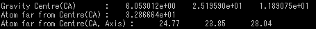
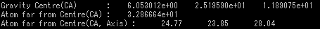
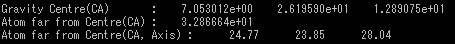
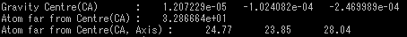

pdbMove
pdbファイルの重心を移動させる
オプション一覧
| オプション |
必須項目/選択項目 |
説明 |
デフォルト |
| -i |
必須 |
入力ファイル設定 |
NULL |
| -o |
必須 |
出力ファイル設定 |
NULL |
| -x |
選択 |
ｘ軸の移動幅を設定 |
0.0 |
| -y |
選択 |
ｙ軸の移動幅を設定 |
0.0 |
| -z |
選択 |
ｚ軸の移動幅を設定 |
0.0 |
| -h |
選択 |
ヘルプを表示 |
|
******実行例******
------入力ファイルの詳細------

------オプション必須項目のみの場合の出力結果------

オプション-x,-y,-zのデフォルトは0.0なので、何も変わらない
------移動させる幅を設定（オプション -x,-y,-z）------
移動の幅をすべて1に設定

移動の幅をx=-6.053012e+00,y=-2.519590e+01,z=-1.189075e+01に設定
